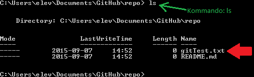
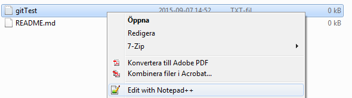
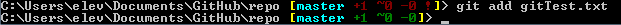
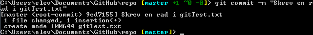
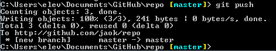

Tutorial i GitHub
Nu ska vi skapa en ny fil i din mapp eller rättare sagt, ditt repo.
Det gör vi med kommandot touch [filnamn].
Så skapa filen gitTest.txt. (Alltså: touch gitTest.txt)
Bra! Nu kan vi dubbelkolla så att filen verkligen skapades. Det gör vi med kommandot ls.

Kommandot ls listar alla mappar och filer som finns i den mappen du står i.
Vi kan se att det finns en fil som heter gitTest.txt som har lenght 0 alltså är den tom, eftersom vi nyss skapade den.
Nu ska du redigera den nyskapade filen. Gå in i utforskaren och öppna filen i valfritt redigeringsprogram.

...
Nu har du lagt till några rader i din fil.
Nu ska vi spara det i en commit så du och andra kan se vad som hänt med filen/koden.
Det gör vi genom att först lägga till filen till vår commit. Detta gör vi med kommandot git add [filnamn]

Nu har vi lagt till filen i vår commit som vi kommer göra.
En commit gör vi genom att skriva: git commit -m "[meddelande]"
(Man kan bara skriva git commit men då får man upp textredigeraren och får skriva ett meddelande där istället.)

Nu har vi gjort en commit på endast flien gitTest.txt men vi har inte laddat upp det till vårat repo på GitHub.
Och det gör vi med kommandot git push.

Skulle du få error så är det bara att pila uppåt och försöka igen
Observera att det nu finns en footer med en länk till nyttiga git-kommandon!
Checka nu ut nästa version av detta repo och uppdatera sidan.
Git commands